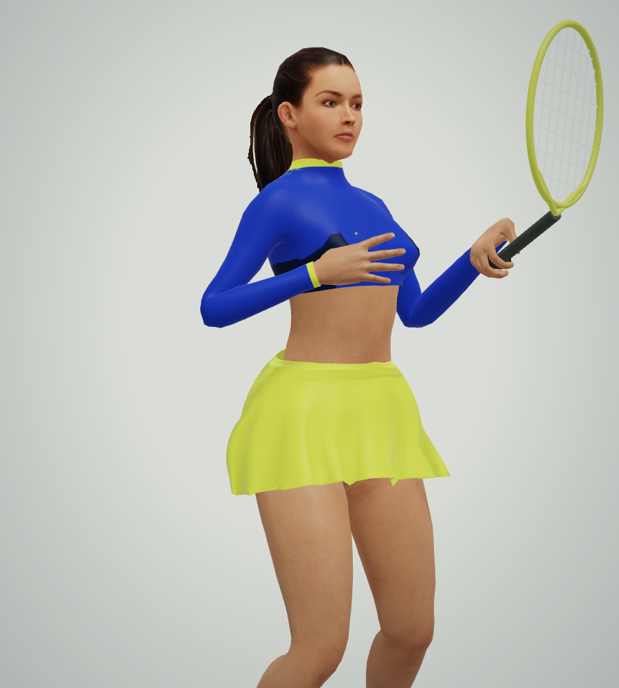
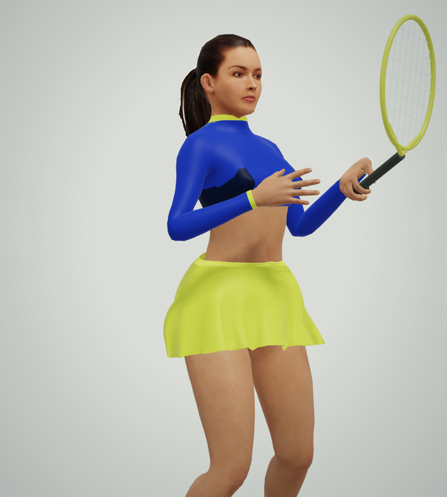
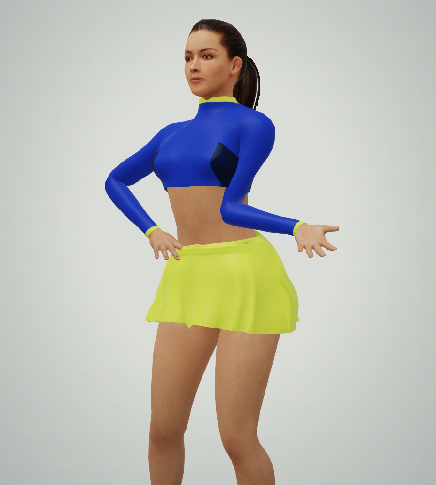
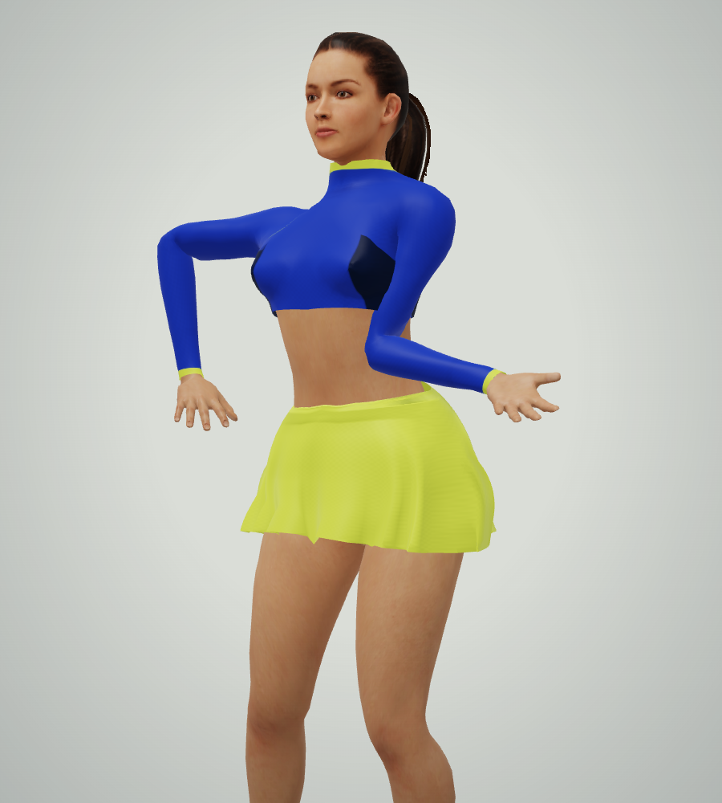

Same volley. Fingers outside the shirt.
Matched native renders, same character, pose time, camera and lighting. An isolated reproduction using the game’s renderer.
Before · fingers intersect shirt
After · free hand clears torso
Before · hand crosses skirt on release
After · hand clears waistband
Remaining: a small sleeve fold on a high backhand. This pass does not establish collision-free clothing in every pose.